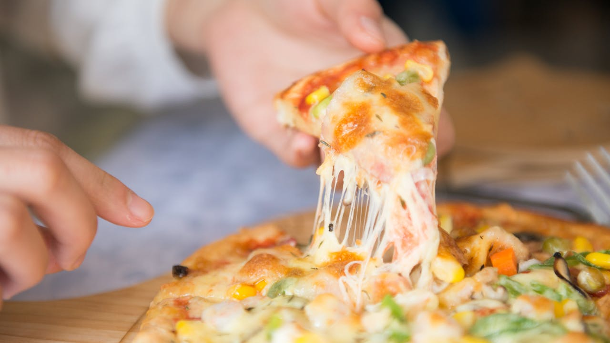

Home
Pizza

This is a great recipe when you don't want to wait for the dough to rise.
You just mix it and allow it to rest for 5 minutes and then it's ready to go! It yields a soft, chewy crust.
Pizza is an Italian, specifically Neapolitan, dish typically consisting of a flat base of leavened wheat-based dough topped
with tomato, cheese, and other ingredients, baked at a high temperature, traditionally in a wood-fired oven.
Ingredients
- 1 cup warm water (110 degrees F/45 degrees C)
- 1 (.25 ounce) package active dry yeast
- 1 teaspoon white sugar
- 2 ½ cups bread flour
- 2 tablespoons olive oil
- 1 teaspoon salt